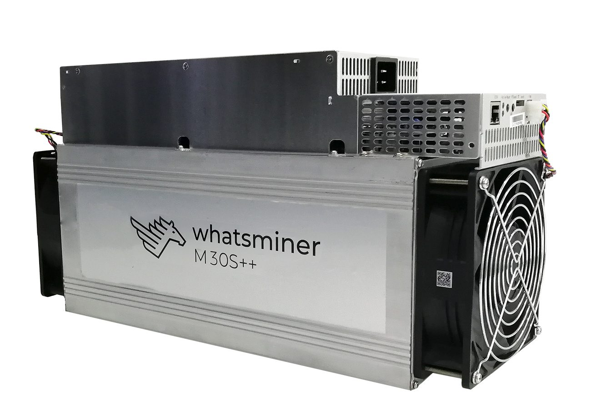

Annotated copy of the original paper by Satoshi Nakamoto
|
full-node
miner + |
Annotations in Blue: Use of the word 'node' that is compatible with computers running either the full-node mode of the software (default configuration) or the miner mode (User configuration required) |
| miner + |
Annotations in Yellow: Use of the word 'node' that is only compatible with the mining mode. Appearances: 24 |
Underlined in red are clues in the text that serve to identify whether the term applies to only miners, or otherwise to both miners and full verification nodes.